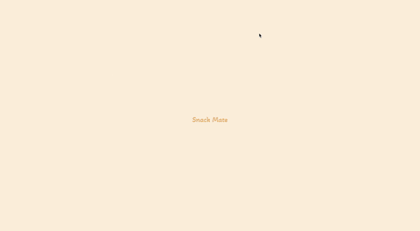
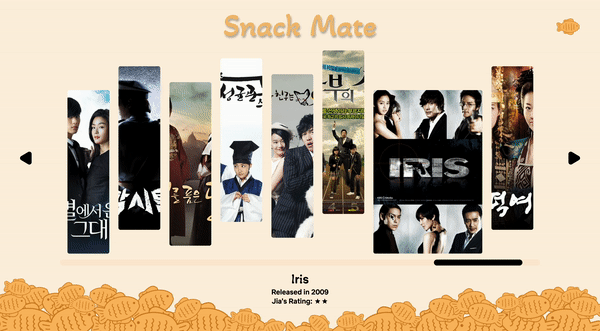
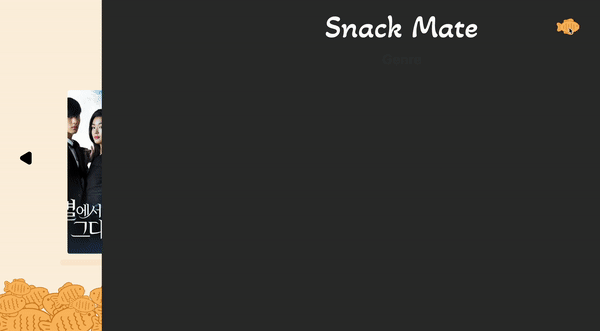

Snack Mate is a project that showcases series of K-Dramas that Jia
watched. Jia used to not be the biggest fan of K-Dramas. However, she
often felt left out as many of her friends watched K-Dramas and the main
topic of the conversation would revolve around the K-Dramas they watched.
Therefore, she started to watch as many K-Dramas as soon as possible. The
project presents the K-dramas that she has watched through out the years
and how she would rank it out of 5. It also contains conversations with
her friends that relates to each K-Dramas.

